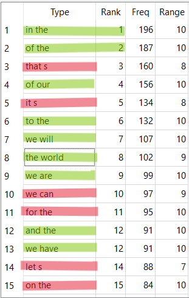
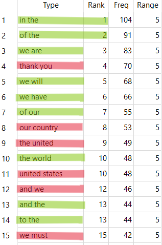
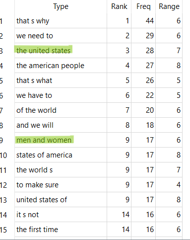
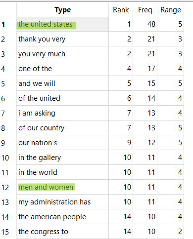

Click here to view my portfolio repository.
The most significant challenges for a new learner of GitHub Pages are learning commands and not breaking your code as you’re going. The largest learning curve, by far, was the commands for Git, HTML, and CSS, all at the same time, and applying them to a website. With GitHub Pages, you have much more control over the way that your website looks and functions, both stylistically and content-wise. Modifying the layout and organization of your site is moderately challenging, as you have to toggle between your CSS and HTML code, sometimes taking time to fuss and get things right. The skills that are necessary to learn and develop a GitHub Pages site are attention to detail, analytical skills, pattern recognition, and organization skills. You really have to take your time and be extra meticulous to not break your code. Even just a little bit of carelessness or brute force can hurt your website. The skills I think I want to learn to improve on this website are CSS and memorization of HTML code shortcuts. I would also enjoy learning more advanced coding down the line.
The most significant challenges for a new learner of WordPress are learning the contents of each menu and the limitations of what you can/ cannot do in WordPress. Additionally, learning where to put code is a learning curve, especially if you do not know how to code. The advantages that are associated with WordPress include user friendliness and ease of use. Since it’s all a graphical interface, the user doesn’t have to worry about memorizing code, and it is an easy way to make a website. Another advantage is the website themes or templates that WordPress provides, which are made by graphic designers. This takes the CSS headache out of the equation of website building. Modifying the layout and organization of the WordPress website is less flexible than GitHub Pages. This is one of the largest challenges when using WordPress. You have preset containers that sit on the website where WordPress drops them. If you want any flexibility, you have to put some sort of code into WordPress. The skills that are necessary to learn and develop a WordPress site are patience and flexibility. This is because of the extra time it will take to orient oneself to all of the menus and rules of WordPress. I think I would want to learn WordPress shortcuts pretty generally, either through tutorials or self-exploration. There didn’t seem to be much learning associated with WordPress, as much as it was user orientation around the application.
To view my Wordpress site, click here.
For this comparative analysis, I am looking at a "Barack Obama Corpus" and a "Donald Trump Corpus", both compiled from public speeches given over the years. Going into this analysis, I was expecting to find a difference in each corpus, specifically surrounding goals and policy because of their differing political parties. For this analysis, I looked at 2, 3, 5, and 7 grams, as well as word clouds produced in Voyant tools to compare and contrast. I also looked at the context around each of the n-grams and overall textual context. From this, I was able to gather evidence that while political figures might use similar language overall, the context in which it is used is important in determining their motivations, beliefs, and policies. This was evident as I dug deep into 2 and 3 word n-grams, how it translated over to 5 and 7-grams, and ultimately was revealed through Voyant's word clouds.
After doing some general orientation to each of the corpora, I collected the most popular 2 word n-grams for both Obama and Trump.
Obama
Trump
When taking a first glance at the n-gram clusters of two, it immediately jumped out to me that the first two most frequent n-grams were "in the" and "of the". The rest of the n-grams that they share involve inclusive and motivating language using words like "we will", "we have", "the world", and "our". These were similarities I did not expect to see, but make sense given that both of them are political figures urging change in policies and government within the United States. It only makes sense to have a motivating and inclusive tone.
I took a closer look at the specific 2 word n-gram "the world" for both Obama and Trump. I wanted to see if the n-gram's that were the same had consistency in context as well.
On the left is Obama's left and right context for "the world" and on the right is Trump's corresponding context.
In the context provided in Obama's corpus, Obama talks about leading the world in technological advancements, education, avoiding war, the middle east, and how the world has changed. On the other hand, Trump's context shows that he talks about the world trade center, showing never before seen movements to the world, trade, illegal immigration, and terrorism. Both of these results taken together show the difference in world view, call to action, and political views.
There are fewer similar 3 word n-grams between both Obama and Trump that I had found as well, only being 2.
Obama
Trump
One of the 3 word n-grams is "men and women", which looks moderately the same with the surrounding context for both Obama and Trump.
This context can be explained as maybe a common way to address the police force and military, as both Obama and Trump used the tri-gram in the same way. Wording such as "of law enforcement", "in uniform", "armed forces", and "military" are used in the surrounding context for both.
Past tri-grams, there is not much to be found in a perfect comparison/contrast for 5 and 7 n-grams that I have not already covered. When I had checked 5 word n-grams, similarity was there in the phrasing which I chalked up to be term of phrase that cannot be ammended too much within some of these speeches. However, surrounding context did prove that their policies and beliefs remained the same.
I ended up moving my analyses over to Voyant Tools to see if both Obama and Trump's beliefs and views could be pulled from their word clouds as well. To do this, I looked at two speeches similar in age: Obama, 2016 (left) and Trump, 2017 (right).
The main takeaway I got from Obama's word cloud is that his main ideas center around families, community, the working class, the future, and change. Its very clear once all of the filler words are removed by Voyant Tools compared to AntConc.
On the other hand, I was able to gather from Trump's word cloud that his main beliefs center around the country of the United States of America, its citizens (which is very specific language, and different from Obama), the government, companies, immigration, giving thanks, and talking about concepts of time. This is all slightly different from what Obama is centered around, and both of which make sense for what they have put forth into policy.